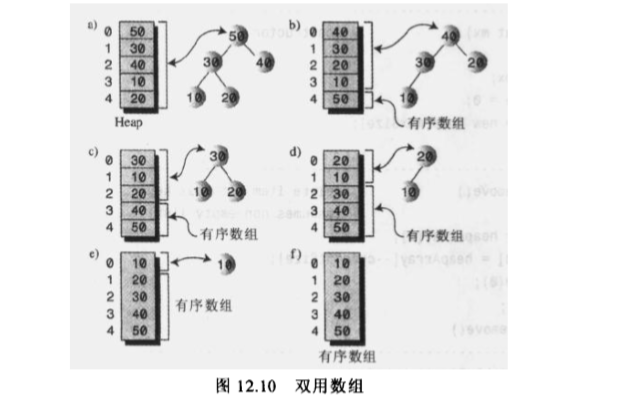

堆排序
堆排序是基于数组，使用二叉树构造堆进行的排序，是一种高效的排序，时间复杂度为O(NlogN)。比快速排序略慢，但它对初始数据的分布并不敏感，有时候快速排序的时间复杂度可能会降到O(N^2)，而堆排序对任意数据排序的复杂度都是O(NlogN)。
堆排序过程
- 建堆
- 得到堆顶元素为最大元素
- 将堆顶元素从堆中移除，将堆最后一个元素放到堆顶，此时可通过调整重新使堆有序。
- 重复步骤3，直到堆变为空
为了节省空间，堆和初始数组可以使用同一数组，具体操作就是将每次由堆顶移除的数据项放在数组末端，此时只需用一个变量来记录数组的大小，忽略已经排好序的数据项就行。

实例代码：
package algorithm;
import static java.lang.Math.random;
public class HeapSort {
public static void main(String[] args) {
int size = 16; // the number of items
Heap theHeap = new Heap(size);
for (int i = 0; i < size; i++) {
int rand = (int)(random() * 100);
Node newNode = new Node(rand);
theHeap.insertAt(i, newNode);
theHeap.incrementSize();
}
System.out.print("Random:");
theHeap.dispayArray();
for (int j = size/2; j >= 0; j--){
theHeap.trickleDown(j); // 将数组转换为堆
}
System.out.println("Heap:");
theHeap.dispayArray();
theHeap.displayHeap();
for (int k = size - 1; k > 0; k--) {
// 从堆中移除数据项并写回数组末端
Node biggestNode = theHeap.remove();
theHeap.insertAt(k, biggestNode);
}
System.out.print("Sorted: ");
theHeap.dispayArray();
}
}
class Node{
private int iData;
public Node(int key){
iData = key;
}
public int getKey(){
return iData;
}
}
class Heap{
private Node[] heapArray;
private int maxSize;
private int currentSize;
public Heap(int size){
maxSize = size;
heapArray = new Node[maxSize];
currentSize = 0;
}
public Node remove(){
Node root = heapArray[0];
heapArray[0] = heapArray[--currentSize];
trickleDown(0); //向下调整成堆
return root;
}
public void trickleDown(int index) {
int largeChild;
Node top = heapArray[index]; // 保存父亲节点
while (index < currentSize/2){
int leftChild = 2 * index + 1;
int rightChild = leftChild + 1;
// 判断右孩子是否存在，且找出关键值大的孩子
if(rightChild < currentSize && heapArray[leftChild].getKey()
< heapArray[rightChild].getKey()){
largeChild = rightChild;
}
else
largeChild =leftChild;
// 父亲节点的关键字是否大于最大孩子
if(top.getKey() >= heapArray[largeChild].getKey()){
break;
}
heapArray[index] = heapArray[largeChild]; // 交换调整
index = largeChild; // 继续往下
}
heapArray[index] = top; // root-->index
}
public void displayHeap(){
int nBlank = 32;
int itemsPerRom = 1;
int colunm = 0;
int j = 0;
System.out.println("......................................");
while(currentSize > 0){
if(colunm == 0){
for (int i = 0; i < nBlank ; i++) {
System.out.print(' ');
}
}
System.out.print(heapArray[j].getKey());
if (++j == currentSize)
break;
if(++colunm == itemsPerRom){ // 行结束了吗？
nBlank /= 2;
itemsPerRom *= 2;
colunm = 0;
System.out.println(); // 换行
}
else{
for (int i = 0; i < nBlank*2-2; i++) {
System.out.print(' ');
}
}
}
System.out.println("\n......................................");
}
public void dispayArray(){
for (int i = 0; i < maxSize; i++) {
System.out.print(heapArray[i].getKey() + " ");
}
System.out.println();
}
public void insertAt(int index, Node newNode){
heapArray[index] = newNode;
}
public void incrementSize(){
currentSize++;
}
}